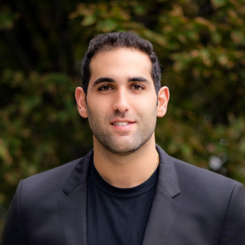
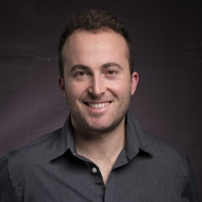
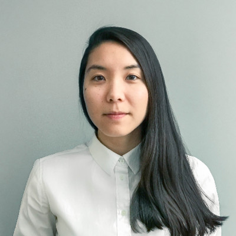
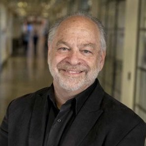
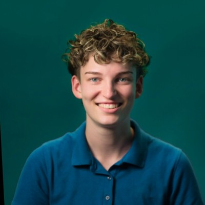

The band drifts on its own — grab it, swipe it, or scroll sideways to move through it by hand. Click a card to turn it over: the opening is on the front, the rest of the note on the back.
David’s drive for innovation is rare. Many people claim to think outside the box, but few truly possess the skill set to stand out. I know this firsthand; I’ve often been called “weird” for my creative process, and it’s rare to find someone who just gets it—but David does.

That ability alone is a special kind of talent.
I had the opportunity to work with David through the PM Lab program at MIT, where he demonstrated strong leadership, communication skills, and a user-centric approach to product management and design. He effectively led the project, ensuring alignment while delivering well-structured, high-quality designs focused on user needs.

David’s ability to translate requirements into intuitive, user-friendly solutions, along with his strategic and collaborative mindset, made a significant impact. He would be a valuable asset to any team.
We had the pleasure of working with David for a few years, part-time during his university semesters and full-time over the summers. It might have been a challenge for most, as he was at times working across time zones, and mostly remote, meeting in-person only a few times.

Yet, he truly shined: self-managed and proactive, a real team player, and eager to learn. David was an important member across many of our projects. He has a strong sense of critical thinking, curiosity, and determination. I look forward to seeing what he ventures into next, and our whole team will be rooting for him.
My most direct professional experience with David was during a master planning competition in Saudi Arabia in 2022. The project was remarkable in both its scale and complexity, requiring a high level of coordination and presenting a true challenge for the entire team.

Throughout the project, David stood out for his ability to work seamlessly with our team and a diverse group of external experts. His skill in navigating this multidisciplinary environment while developing innovative design solutions was particularly impressive.
I’m certain that David’s curiosity, team spirit, and strong work ethic would make him a valuable asset to any creative project.
I've had the pleasure of working closely with David on several large-scale master planning projects, and I am continually impressed by his strong design instinct. As an urban designer, David consistently brings innovative and creative solutions to every project we undertake together.
David's collaborative and engaging nature shines through in both team interactions and client meetings. His exceptional ability to understand and translate client needs into effective design solutions fosters a positive and productive working environment.
What truly sets David apart is his potential to become a strong leader. His visionary approach and dedication to creating sustainable urban master plans are qualities that will undoubtedly propel him forward in his career. His contributions have been invaluable, and I am excited to see the amazing achievements that lie ahead for him.
Also, any chance I could get a copy of your portfolio to show my co-founder what a cracked designer you are. No worries if not!

CEO, Crebit (a16z Speedrun)